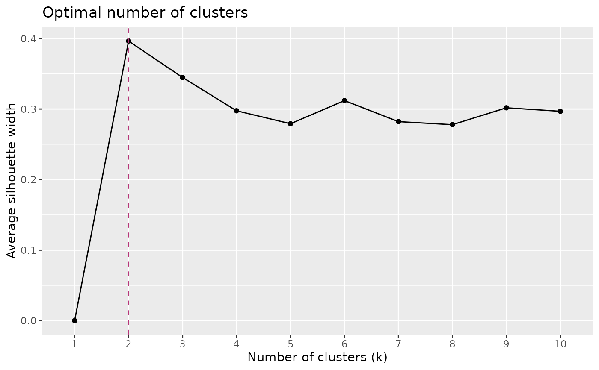
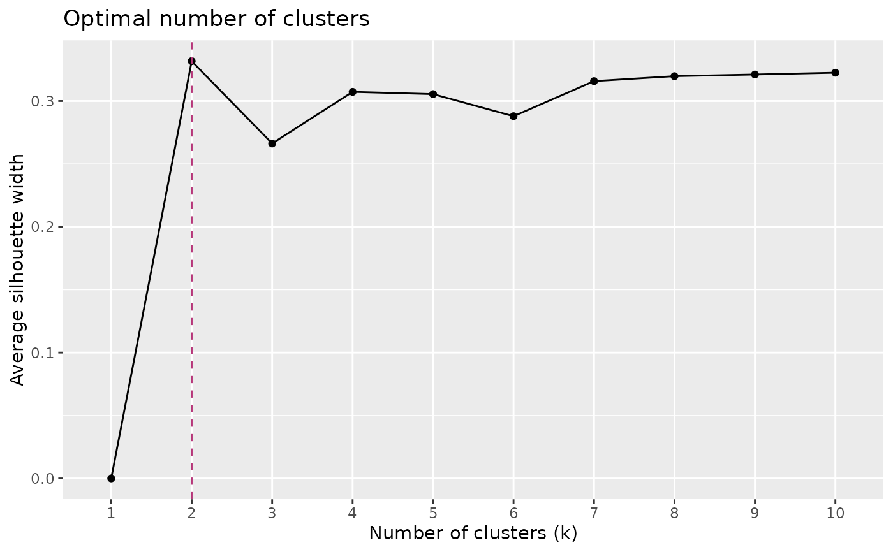

Determines the optimal number of clusters in a dissimilarity matrix using average silhouette width.
Usage
path_nbclust(
x,
FUNcluster = path_hcut,
k.max = 10,
n.threshold = Inf,
linecolor = "#B63679FF",
...
)Arguments
- x
either an object of class
"HeFTy"(output ofread_hefty()),"tTdiss(output ofpath_diss()), or adata.framecontaining thetime,temperature, andsegmentcolumns of the modeled paths. Ifxis not a"tTdiss"object, it will be calculated first bypath_diss()using its default settings.- FUNcluster
cluster function. Default is
path_hcut().- k.max
integer. the maximum number of clusters to consider, must be at least two.
- n.threshold
integer. If the number of paths is greater than this value, a random sample of size
n.thresholdof paths will be selected from the dissimilarity matrix to determine the optimal number of clusters. Must be greater thank.max. Default isInf, i.e., no sampling. Consider to specify this parameter if processing takes too much time.- linecolor
line color
- ...
optionally further arguments for
FUNcluster
Value
list. $optimal (integer) is the optimal number
of clusters, $plot is a ggplot showing the average silhouette width for each number of clusters.
Examples
# example data
data(tT_paths)
set.seed(20250411)
res1 <- path_nbclust(tT_paths, n.threshold = 100)
res1
#> $optimal
#> [1] 2
#>
#> $plot

#>
tT_paths_subset <- subset(tT_paths$paths, Comp_GOF >= 0.4)
res2 <- path_nbclust(tT_paths_subset)
res2
#> $optimal
#> [1] 2
#>
#> $plot

#>